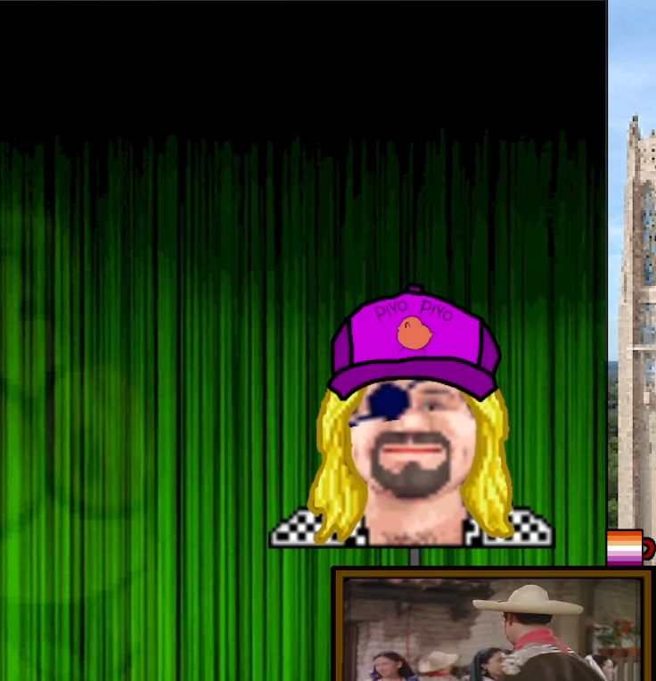

Baseball Cap
The standard issue “normal human being” hat.
Usually equipped when attempting to look reasonable for at least five consecutive minutes.
Usually equipped when attempting to look reasonable for at least five consecutive minutes.
+5 Everyday Energy